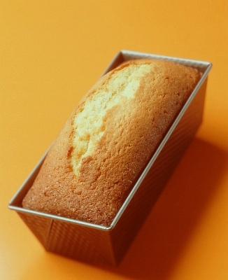
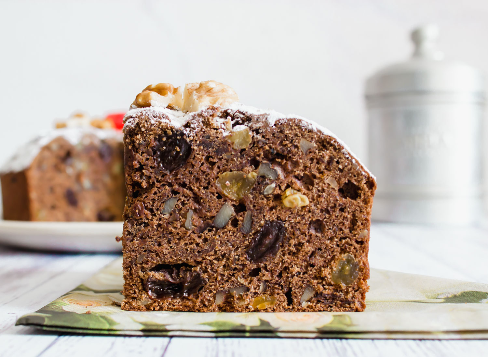
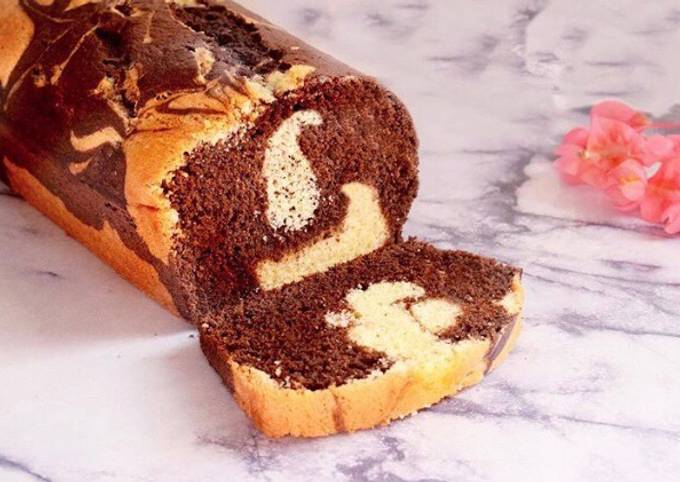
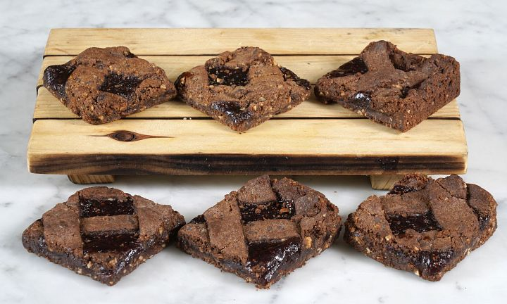

Budines
Clasicos

Galés
Budín de vainilla con ciruelas, pasas de uva, nueces y vino oporto.

Limón
Budín de limón cubierto con glasé de limón.

Budin ingles
Base de brownie cubierta con dulce de leche, mousse de chocolate y merengue italiano.

Marmolado
Budín marmolado de vainilla y chocolate.

Mandarina
Budín de mandarina cubierto con glasé de jugo de mandarina.

Toblerone
Budín de chocolate relleno con trozos de chocolate.
Naranja
Budín de naranja cubierto con glasé de jugo de naranja.

Zucchini y arándanos
Budín de zucchini con arándanos y canela.